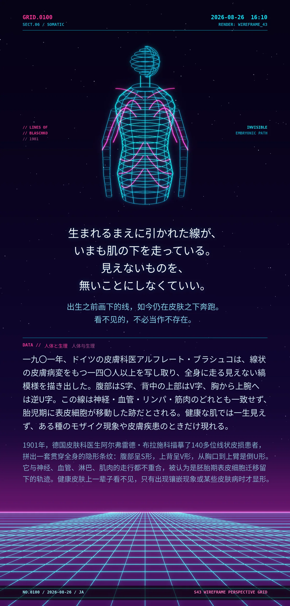

生まれるまえに引かれた線が、いまも肌の下を走っている。見えないものを、無いことにしなくていい。（出生之前画下的线，如今仍在皮肤之下奔跑。看不见的，不必当作不存在。）
一九〇一年、ドイツの皮膚科医アルフレート・ブラシュコは、線状の皮膚病変をもつ一四〇人以上を写し取り、全身に走る見えない縞模様を描き出した。腹部はS字、背中の上部はV字、胸から上腕へは逆U字。この線は神経・血管・リンパ・筋肉のどれとも一致せず、胎児期に表皮細胞が移動した跡だとされる。健康な肌では一生見えず、ある種のモザイク現象や皮膚疾患のときだけ現れる。（1901年，德国皮肤科医生阿尔弗雷德·布拉施科描摹了140多位线状皮损患者，拼出一套贯穿全身的隐形条纹：腹部呈S形，上背呈V形，从胸口到上臂是倒U形。它与神经、血管、淋巴、肌肉的走行都不重合，被认为是胚胎期表皮细胞迁移留下的轨迹。健康皮肤上一辈子看不见，只有出现镶嵌现象或某些皮肤病时才显形。）